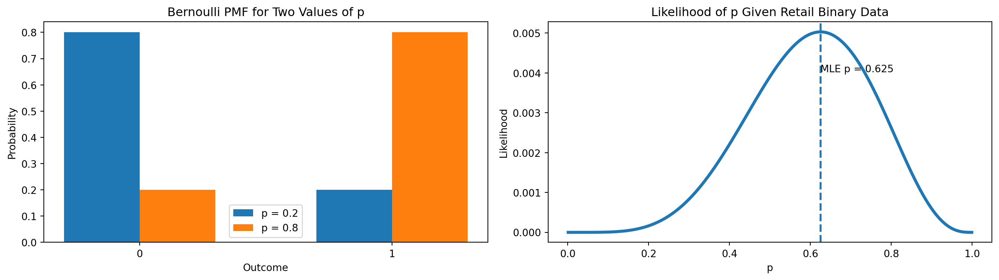
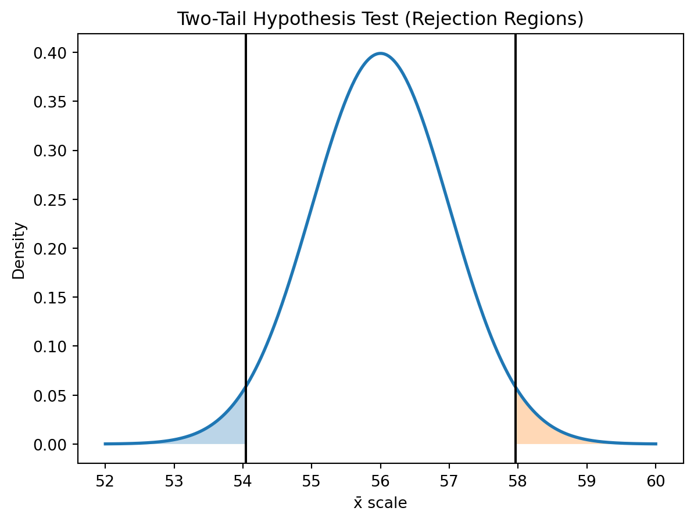
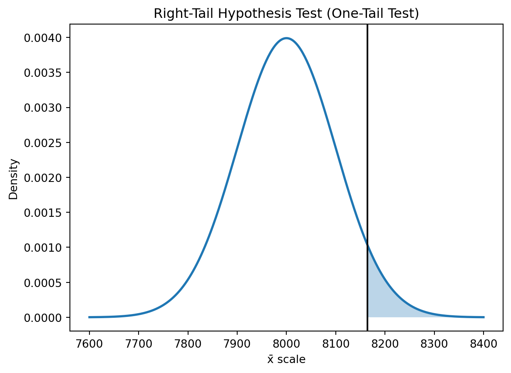

[174, 169, 175, 182, 168]Statistics Session 03: Inference Essentials
Probabilistic Distributions, Sampling
statistics
Probabilistic Distributions
Topics
- Probabilistic Distributions
- Sampling
- Confidence Intervals
- Hypothesis Testing
Well-Known Distributions

What is a Probability Distribution?
To understand a probability distribution, we start with a simple experiment: We go outside and measure people’s heights, one person at a time. Assume the true average height in the population is around 175 cm.
We begin with just a few measurements and gradually build the distribution.
Normal Distribution
These first five people have heights around the high 144 to high 200.
Histogram with 5 People

Wider Bins

Narrower Bins

Increasing Sample Size to {python} N

Generalization
\[ f(x) = \frac{1}{\sigma \sqrt{2\pi}} \exp\left( -\,\frac{(x - \mu)^2}{2\sigma^2} \right) \]

Probability Density Function
\[ f(x) = \frac{1}{\sigma \sqrt{2\pi}} \exp\!\left( -\,\frac{(x - \mu)^2}{2\sigma^2} \right) \]
- \(f(x)\) gives the probability density at value \(x\). It describes how concentrated the distribution is around that point.
- \(\mu\) is the mean.
- \(\sigma\) is the standard deviation.
- small \(\sigma\) makes the curve narrow and tall,
- large \(\sigma\) makes it wide and flat.
- small \(\sigma\) makes the curve narrow and tall,
The term \(\frac{1}{\sigma \sqrt{2\pi}}\) ensures that the total area under the curve equals 1, as required for any probability distribution.
Two Normal Distributions

Uniform Distribution
Imagine
Imagine a telecom system that assigns a customer to one of several identical support bots randomly.
The system waits somewhere between 0 and 10 seconds before routing the customer, and every value in that interval is equally likely.
This kind of process has no preference:
- not more likely to assign earlier,
- not more likely to assign later.
Probability Density Function (PDF)
If \(X \sim U(a,b)\), then:
\[ f(x) = \frac{1}{b - a}, \quad a \le x \le b \]
- \(f(x)=0\) outside the interval
- \([a,b]\) is equally likely.
Suppose we observe a sample \(x_1, x_2, \dots, x_n\) from a uniform distribution \(U(a,b)\).
The likelihood of the parameters \((a,b)\) given the data is:
\[ L(a,b \mid x_1,\dots,x_n)=\prod_{i=1}^n f(x_i) \]
Because the PDF is constant inside the interval:
- If all observations lie in \([a,b]\):
\[ L(a,b \mid x_1,\dots,x_n)=\left(\frac{1}{b-a}\right)^n \]
- If any observation lies outside \([a,b]\):
\[ L(a,b \mid x_1,\dots,x_n)=0 \]
So uniform likelihood is simple:
constant if all points are inside, zero otherwise.
Visualizing Uniform Distribution

Exponential Distribution
Consider a supermarket or retail chain.
Customers arrive at the checkout lanes randomly, and the store wants to model:
How long until the next customer arrives at the counter?
If arrivals are independent and have no memory, then the waiting time** between customer arrivals follows an Exponential distribution.**
- if you’ve been waiting 4 minutes already, the next customer is not
due- every moment is a fresh start
- the past does NOT influence the future (Markov Chain)
This is very common in retail analytics:
- time until next customer walks into the store,
- time until next person reaches a self-checkout station,
- time until next event in an online store: purchase, add-to-cart, click, etc.
All of these waiting times are modeled well by the Exponential distribution.
Probability Density Function (PDF)
If \(X \sim \text{Exp}(\lambda)\):
\[ f(x) = \lambda e^{-\lambda x}, \quad x \ge 0 \]
Where:
- \(\lambda\) = customer arrival rate (customers per minute)
- \(1/\lambda\) = average waiting time
Likelihood for Observed Retail Data
Suppose we measure actual waiting times between customer arrivals:
\[ x_1, x_2, \dots, x_n \]
The likelihood of \(\lambda\) given the data is:
\[ L(\lambda) = \prod_{i=1}^n \lambda e^{-\lambda x_i} \]
This simplifies to:
\[ L(\lambda) = \lambda^n \exp\!\left(-\lambda \sum_{i=1}^n x_i\right) \]
Log-likelihood:
\[ \ell(\lambda) = n \ln(\lambda) - \lambda \sum x_i \]
Maximum Likelihood Estimate (MLE):
\[ \hat{\lambda} = \frac{n}{\sum x_i} \]
Interpretation:
- fast arrivals → large \(\lambda\)
- slow arrivals → small \(\lambda\)
Just like checkout traffic in a retail store.
Visualization (PDF + Likelihood Curve)
We use example waiting times in minutes: obs = [1.2, 0.5, 2.0, 0.8]
These could be times between customers reaching a checkout lane.
- Left plot → PDF comparison for \(\lambda = 1\) and \(\lambda = 0.3\)
- Right plot → Likelihood curve for the observed retail dat

Interpretation
- When customers arrive quickly and consistently, the waiting times shrink → the likelihood favors a large \(\lambda\).
- When customers arrive sporadically or slowly, the waiting times grow → the likelihood favors a small \(\lambda\).
In our observed data:
- Average waiting time = \(4.5 / 4 = 1.125\) minutes
- MLE: \(\hat{\lambda} = 4/4.5 = 0.889\) customers/minute
Meaning:
- the best-fitting model suggests approximately 0.89 customers per minute,
- which corresponds to one customer roughly every 1.1 minutes.
This type of analysis is central in retail analytics for understanding staffing requirements, managing checkout lanes, predicting peak hours, and optimizing store operations.
Poisson Distribution
Real-World Narrative (Retail)
In a retail store, the number of customers who walk through the entrance during a fixed time interval (e.g., 1 hour) is often random but follows a stable average rate.
Examples: - number of customers per hour, - number of purchases per minute in an online shop, - number of returns processed during each 30-minute window, - number of carts abandoned every hour.
If these events occur independently and with a constant average rate, then the number of events in a time window follows a Poisson distribution.
Probability Mass Function (PMF)
If \(X \sim \text{Poisson}(\lambda)\):
\[ P(X = k) = \frac{\lambda^k e^{-\lambda}}{k!}, \quad k = 0,1,2,\dots \]
Where:
- \(\lambda\) is both the average number of events and the variance.
Likelihood for Observed Retail Counts
Suppose we observe event counts:
\[ x_1, x_2, \dots, x_n \]
The likelihood for \(\lambda\) is:
\[ L(\lambda) = \prod_{i=1}^n \frac{\lambda^{x_i} e^{-\lambda}}{x_i!} \]
This simplifies to:
\[ L(\lambda) = \lambda^{\sum x_i} \, e^{-n\lambda} \Big/ \prod x_i! \]
The log-likelihood:
\[ \ell(\lambda) = \left(\sum x_i\right)\ln(\lambda) - n\lambda + \text{constant} \]
Maximum likelihood estimate:
\[ \hat{\lambda} = \frac{1}{n} \sum x_i \]
which is simply the sample mean count.
Visualization
- Left plot → PMF for \(\lambda = 3\) and \(\lambda = 10\)
- Right plot → likelihood as a function of \(\lambda\)

Interpretation (Retail Context)
- Higher \(\lambda\) means more customers entering per time interval.
- Lower \(\lambda\) means slower foot traffic.
In our observed retail data:
- Total customers = \(S = 23\)
- Number of intervals = \(n = 6\)
- MLE: \(\hat{\lambda} = 23/6 = 3.83\) customers per interval
Meaning:
- on average, about 3.8 customers arrive every 10 minutes,
- which translates to roughly 23 customers per hour.
This insight helps retailers in:
- labor scheduling,
- checkout allocation,
- opening a new lane at high-traffic times,
- supply-level decisions,
- forecasting hourly demand.
Bernoulli Distribution
Real-World Narrative (Retail)
The Bernoulli distribution describes a single yes/no outcome.
In retail, this is everywhere:
- A customer buys an item (1) or does not buy it (0)
- A visitor clicks an online ad (1) or does not click (0)
- A shopper redeems a coupon (1) or does not redeem (0)
- A customer signs up for loyalty program (1) or does not (0)
Every Bernoulli trial has just two outcomes: - success (1) with probability \(p\) - failure (0) with probability \(1 - p\)
Probability Mass Function (PMF)
If \(X \sim \text{Bernoulli}(p)\):
\[ P(X = 1) = p, \qquad P(X = 0) = 1 - p \]
\(X\) takes only two values: 0 or 1.
Likelihood for Observed Retail Data
Suppose we observe binary outcomes:
\[ x_1, x_2, \dots, x_n \]
The likelihood for \(p\) is:
\[ L(p) = p^{\sum x_i} (1-p)^{n - \sum x_i} \]
Log-likelihood:
\[ \ell(p) = \left(\sum x_i\right)\ln(p) + \left(n - \sum x_i\right)\ln(1 - p) \]
MLE:
\[ \hat{p} = \frac{\sum x_i}{n} \]
which is simply the sample proportion
(e.g., the observed purchase rate).
Visualizations
We use sample retail purchase-decision data: obs = [1, 0, 1, 1, 0, 0, 1, 1]
This could represent whether a customer bought an item after viewing it online.
- Left plot → PMF for \(p = 0.2\) and \(p = 0.8\)
- Right plot → likelihood curve for \(p\) based on the observed data.

Interpretation
- Higher \(p\) means customers are much more likely to buy the product.
- Lower \(p\) means customers rarely make the purchase.
In our observed data:
- Number of purchases = \(S = 5\)
- Number of customers = \(n = 8\)
- MLE: \(\hat{p} = 5/8 = 0.625\)
Meaning:
- the best-fitting Bernoulli model suggests approximately 62.5% purchase probability,
- meaning a customer buys the product roughly 3 out of every 5 times they view it.
Retail analysts use this to:
- measure conversion rate,
- optimize product placement,
- A/B test promotions,
- forecast revenue based on customer behavior,
- identify products with high vs. low purchase likelihood.
Final Comparison of the Four Distributions (Retail Context)
To summarize everything covered so far, this we will put the four core distributions side-by-side using their:
- variable type,
- real-world retail interpretation,
- mathematical form,
- likelihood intuition,
- and when you should use each one.
This serves as a compact review page for students.
Comparison Table
| Distribution | Variable Type | What It Models | Retail Example | Key Parameter | Likelihood Intuition |
|---|---|---|---|---|---|
| Uniform | Continuous (range) | All values in an interval equally likely | Random delay before assigning a customer to a cashier | \(a, b\) | Likelihood is constant if all observations lie inside \([a,b]\) and zero otherwise. Narrower intervals increase likelihood. |
| Exponential | Continuous (positive) | Time until next random event | Time between customer arrivals at checkout | \(\lambda\) | Likelihood favors large \(\lambda\) when arrivals are frequent (short waits), small \(\lambda\) when arrivals are sparse (long waits). |
| Poisson | Discrete count | Number of events in a fixed time window | Number of customers entering per hour | \(\lambda\) | Likelihood peaks at \(\hat{\lambda} = \text{sample mean}\). Higher counts favor larger \(\lambda\). |
| Bernoulli | Discrete binary | One yes/no outcome | Customer buys or does not buy a product | \(p\) | Likelihood increases as \(p\) approaches the observed proportion of purchases. Peaks at \(\hat{p}=S/n\). |
When to Use Each Distribution?
Uniform
Use when you only know the range of possible values but have no reason to believe any value is more likely.
Examples:
- random delays,
- random arrival windows,
- simulation/bootstrapping where all outcomes are equally plausible.
Exponential
Use when you are modeling waiting times between independent events.
Examples:
- time between customers at checkout,
- time between online purchases,
- time until next reward point redemption,
- time until next item is scanned at self-checkout.
Poisson
Use when you count how many events occur in a fixed interval of time.
Examples:
- customers entering the store per hour,
- number of orders in each 5-minute window,
- number of carts abandoned per hour,
- number of returns processed every 30 minutes.
Bernoulli
Use when modeling a single yes/no trial:
Examples:
- customer buys
(1)or does not buy(0), - customer clicks or does not click a promotion,
- customer redeems or does not redeem a coupon,
- customer signs up or does not sign up for loyalty program.
Final Intuition Summary
- Use Uniform for “random within limits.”
- Use Exponential for “time until next event.”
- Use Poisson for “number of events per interval.”
- Use Bernoulli for “one yes/no outcome.”
Together, these four distributions cover the majority of basic retail/business modeling scenarios:
- foot traffic analysis,
- checkout optimization,
- conversion measurement,
- forecasting purchase behavior,
- and customer journey analytics.
They also form the foundation for more advanced models:
- Binomial,
- Gamma,
- Negative Binomial,
- Many Bayesian updates
Central Limit Theorem (CLT)
The normal distribution is kind of magical in that we see it a lot in nature. But there’s a reason for that, and that reason makes it super useful for statistics as well. The Central Limit Theorem is the basis for a lot of statistics and the good news is that it is a pretty simple concept. That magic is called The Central Limit Theorem (CLT).

“Even if you’re not normal, the average is normal”
Hypothesis Testing
Keep calm and test the HYPOTHESIS!
Hypothesis: Assumption about a population mean
Examples of situations which require hypothesis testing
- The industry that promotes compact fluorescent light (CFL) bulbs claims the bulbs use 75% less energy and last 10 times longer than incandescent bulbs. An independent lab would like to test this claim using hypothesis testing.
- A recent Wall Street Journal article titled “Does the Internet Make You Smarter or Dumber?” posed the possibility that online activities turn us into shallow thinkers. The article cited a statistic claiming that the average time an American spends looking at a Web page is 56 seconds. A researcher at a local university would like to test this claim using a hypothesis test.
- The average car speed in Yerevan is
15 km/s.
what else?
Null and Alternative
- Null Hypothesis \(H_0\) represents the status-quo or current situation. It assumes the population parameter equals (\(=\)), is less than or equal (\(\le\)), or greater than or equal (\(\ge\)) a specific value.
- Alternative Hypothesis \(H_1\) opposes the null. It states that the population parameter is \(<\), \(>\), or \(\ne\) a specific value.
- Wall Street Journal example (claim about average web page viewing time).
The purpose of hypothesis statements is to draw a conclusion about population parameters for which we do not have complete knowledge.
| Concept | Description |
|---|---|
| Null Hypothesis (\(H_0\)) | Represents status-quo; assumes no change or no effect. |
| Alternative Hypothesis (\(H_1\)) | Represents what we test for; assumes change, effect, or difference exists. |
Alternative hypothesis is sometimes called the research hypothesis.
Two-Tail Hypothesis Test
A two-tail hypothesis test is used whenever the alternative hypothesis is expressed as:
\[ H_1 : \mu \ne 56 \]
Our Wall Street Journal example has the following hypotheses:
\[ H_0 : \mu = 56 \\ H_1 : \mu \ne 56 \]

Procedure of Hypothesis Test
- Collect a sample of size \(n\) and calculate the sample mean. In this example, the sample mean represents the mean viewing time per Web page.
- Plot the sample mean on the x-axis of the sampling distribution curve (Figure 9.1).
- If the sample mean falls within the white region, we do not reject \(H_0\). This means we do not have enough evidence to support \(H_1\), which states that the population mean is not equal to 56 seconds.
- If the sample mean falls in either shaded region (rejection regions), we reject \(H_0\). This means we have enough evidence to support \(H_1\) — that the true mean is not 56 seconds.
One-Tail Test
- CFL bulb example:
\[ H_0 : \mu \le 8000 \\ H_1 : \mu > 8000 \]
This is a right-tail hypothesis test where we only consider large values of \(\bar{x}\) as evidence against \(H_0\).

Analogy with Legal System
We can never accept the null hypothesis. We can only reject it or fail to reject it.
The legal system uses a similar structure.
A defendant is assumed innocent until proven guilty.
Hypotheses formulated in legal analogy:
\(H_0 : \text{The defendant is innocent (status quo)}\) \(H_1 : \text{The defendant is guilty}\)
The two possible conclusions:
- Reject \(H_0\) → The defendant is guilty
- Fail to reject \(H_0\) → The defendant is not guilty
Type I and Type II Errors
In quality control applications:
- Type I error = producer’s risk
- Type II error = consumer’s risk
The table below summarizes the decision outcomes.

Decision Rule
| Condition (Reality) | Decision: Reject \(H_0\) | Decision: Do Not Reject \(H_0\) |
|---|---|---|
| \(H_0\) is actually true | Type I Error (\(\alpha\)) | Correct Outcome |
| \(H_0\) is actually false | Correct Outcome | Type II Error (\(\beta\)) |
For quality control applications:
- Type I error = producer’s risk: \(H_0 : \mu = 4.0 \text{ mm}\) (process is satisfactory)
- Type II error = consumer’s risk: \(H_1 : \mu \ne 4.0 \text{ mm}\) (process is not satisfactory)